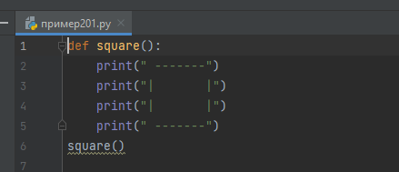
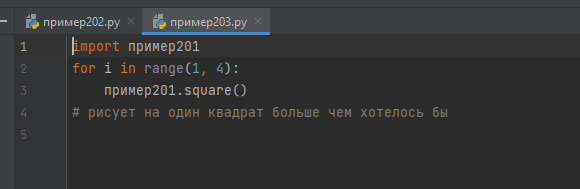
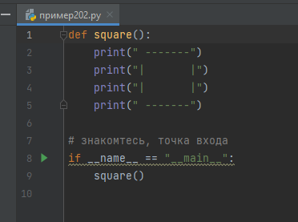

Меню
Глава III.
Объектно-ориентированное программирование(ООП)
Объе́ктно-ориенти́рованное программи́рование (ООП) — методология программирования, основанная на представлении программы в виде совокупности объектов, каждый из которых является экземпляром определённого класса, а классы образуют иерархию наследования
Проще говоря нужно разбить сложный процесс на множество под процессов для упрощения понимания и ускорения работы кода.
Оглавление
Параграф 1. Функции.
Функции позволяют нам выполнять часть кода множественное количество раз, в функции можно передавать разные значения и получать ответ от нее.
Функция определяется так:
def //название функции//(//параметры//):
//тело функции//

После return выполнение функции прерывается.
Используя global можно назначить общие для всех функций переменные
Функции позволяют оптимизировать код и не писать одно и тоже множество раз.
Параграф 2. Точка входа.
Как вы уже знаете в python можно импортировать другие библиотеки, но также вы можете импортировать в свой файл другой ваш файл, при этом он исполнится. Но если вам это не нужно, придется воспользоваться точкой входа.
Python интерпретатор автоматически создает переменную с названием __name__ и значением __main__, но только если вы запускаете сам файл, а не импортируете его




параграф 3. Классы.
Класс нужен для описания чего-то большого и хранения множества функций и переменных, класс может описывать персонажа игры или поле битвы, сложную математическую формулу и вообще все что душе угодно.
Класс задается так:
Class //имя//(параметры):
//тело класса//
Класс похож на функцию, но это только на первый взгляд. Есть не мало отличий.
В классе нельзя просто создать переменную или вызвать функцию, нужно сказать , что она принадлежит ему через self
В классах все записывается в функциях. Функция с названием __init__ будет запускаться при каждом создании экземпляра класса

итоги главы.
Мы немного разобрались в ооп. Этих знаний достаточно для проектов средней сложности, а углубляться можно до бесконечности и конечно в одной главе всего не объять.
Немного отходя в сторону от основной темы, существует библиотека Qt и программа Qt Designer,
С помощью которых можно легко например написать калькулятор с графикой.
Через библиотеку pyinstaller можно осуществить компиляцию код в исполняемаый файл.
Обо всем этом можно узнать из дополнительных источников в конце
Я лишь приложу в дополнительных материалах пример и инструкцию по установке библиотек через pip